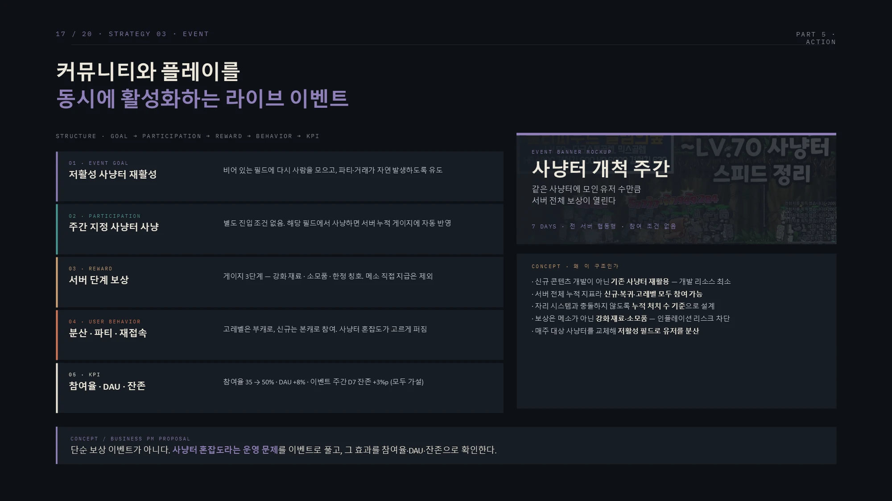

포트폴리오 분석/기획 제안 / Artale
성장과 복귀 경험에서 제안을 시작합니다
사냥/성장/보상/거래가 이어지는 플레이 흐름을 살펴보고, 신규/복귀 이용자를 위한 안내와 상품, 기존 사냥터를 활용한 이벤트를 제안한 분석 자료입니다.
이용자별로 다른 확인 항목
신규/복귀/일반/하드코어 이용자를 나눠 목표와 어려움을 가설로 정리했습니다.
초기 성장에서는 다음 사냥터와 장비 교체 시점, 복귀 과정에서는 달라진 서비스에 다시 적응하는 과정을 검토했습니다.
이용자 구분과 어려움은 분석 가설입니다.
실제 이용자 조사나 내부 잔존율로 확인한 결과는 아닙니다.

안내/상품/이벤트를 나눠 제안합니다
성장 가이드와 단계 미션
추천 사냥터와 단계별 목표를 안내하는 패널을 제안했습니다.
첫 사냥터까지 걸리는 시간과 미션 완료, 이후 재접속을 확인하는 구성입니다.
귀환자 성장 패스
복귀 직후가 아닌 적응 이후에 제시하는 14일 미션형 패스입니다.
사냥/보스/거래 미션과 단계별 보상을 묶고, 구매 전환과 복귀 이후 참여를 함께 확인하는 안입니다.
실제 판매 상품이 아닌 제안입니다.
보호권 등 보상 구성은 기존 상품과의 중복, 성장/거래에 미칠 영향을 추가 검토해야 합니다.
사냥터 개척 주간
기존 사냥터의 누적 처치 수로 서버 공동 목표를 채우는 협동 이벤트를 제안했습니다.
메소 직접 지급 대신 강화 재료와 소모품을 보상 후보로 두고, 참여율과 사냥터 분산을 확인하는 안입니다.

이미지의 참여율/DAU/잔존율 수치는 검증을 위한 가설 목표이며 실제 운영 성과가 아닙니다.
성장 안내가 도움이 되는지 먼저 검증합니다
기존 온보딩을 유지하는 집단과 성장 가이드를 보여주는 집단을 비교하는 실험안을 담았습니다.
D7 재접속률을 주요 확인 지표로 두고, 첫 사냥터 도달 시간과 플레이 시간, 이탈 관련 문의를 함께 살펴보도록 제안했습니다.
확인 결과에 따라 적용 범위를 넓히거나 미션과 노출 시점을 조정하고, 도움이 되지 않으면 되돌리는 기준을 정리했습니다.
실험을 수행하거나 개선 효과를 확인한 자료는 아닙니다.
공개 정보에 기반한 포트폴리오 분석/기획 제안입니다.
자료의 VOC 빈도와 KPI 목표값은 가설이며, 실제 서비스 지표나 재직 성과로 제시하지 않습니다.